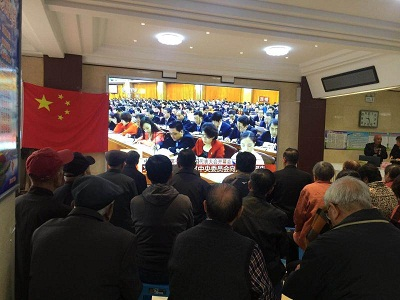
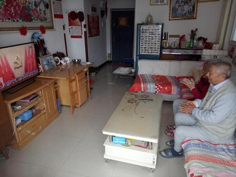

路南区惠民道街道组织社区群众观看十九大开幕式
浏览次数：316 发布时间：2017年10月31日
10月18日上午9时，中国共产党第十九次全国代表大会在北京隆重开幕。惠民道街道积极组织社区工作者、居民群众收听收看党的十九大盛况，聆听习近平总书记的工作报告。
社区在一楼服务大厅用电子显示屏播放开幕式盛况。党员居民张长伸大爷说：“我1951年加入中国共产党，跟党走了整整66年。66年的经历告诉我：没有共产党就没有新中国，跟着共产党走是一生最正确的选择！今年我已85岁了，作为一名老党员，在党的十九大召开之际，我想对新一代党员说：经历万水千山回望来时路，我们只有永远不忘初心，铸牢坚守信仰的铜墙铁壁，才能走好新的长征路！”


社区党委书记李树娟说：“观看了十九大开幕式，我感慨颇深，作为党员干部，既要心系居民，又要着眼实际。我决心严格要求自己，勤奋工作，积极进取，进一步检查党风党纪，不断提高自己的业务能力和水平，以饱满的热情对待每一位社区居民。”
各社区在10余个分会场分别组织本社区党员积极收听收看十九大开幕式，大家认真收看，现场不时响起阵阵掌声。
景荣社区王久平书记表示，大会让人心潮澎湃，深受鼓舞。作为一名社区书记，我要不断提升自己，严格要求自己，用心为居民提供最优质的服务，甘于做最基层的螺丝钉，在国家富强发展的道路上，用上自己的力，拧上自己的劲儿。
社区老党员邓大爷边看边回忆了党和国家数十年来的发展之路，感慨良多。我们的国家不断强大，经济、文化、外交等各个方面取得了长足的发展，世界有目共睹；我看在眼里，喜在心上。作为老党员，我要发挥余热，为身边人做出表率，多为社区和家园的建设做出贡献。
很多居民在家观看：知道今天是十九大开幕式，惠民园社区老党员张重泰一早来到电视机旁，老两口共同收看了十九大开幕式，激动之处不住鼓掌庆贺。老人激动地说，五年来，祖国发生了巨大的变化，成就显著，报告听得振奋人心，国家富强了，自己的生活也有了实质性的改善，这都要由衷地感谢党的正确领导。

大家纷纷表示：相信在党的领导下，我们的社区一定会越来越好，老百姓的日子会越过越滋润。
供稿： 路南社区教育分院 责任编辑：李春燕 柯建林